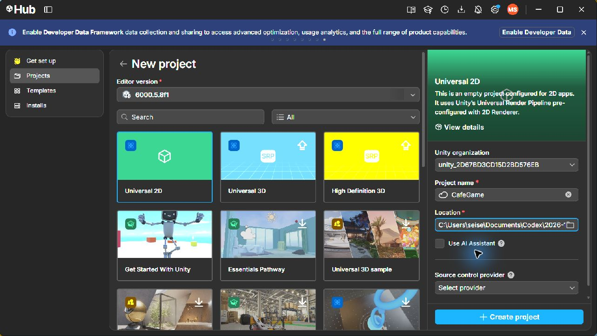
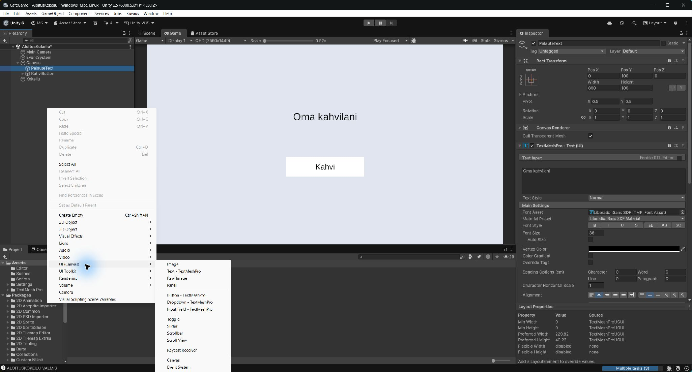
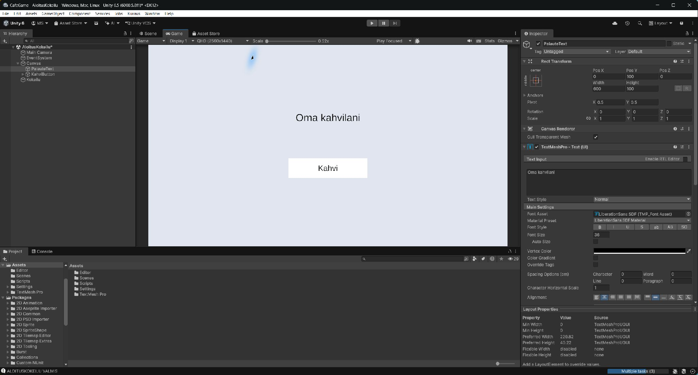
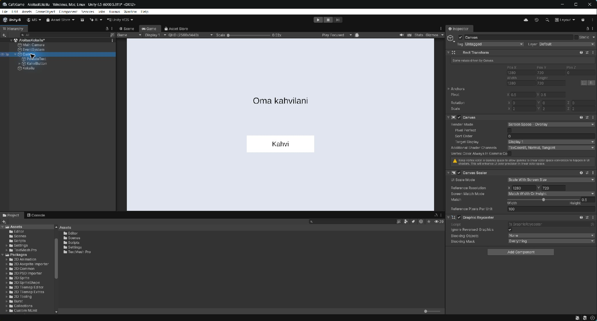
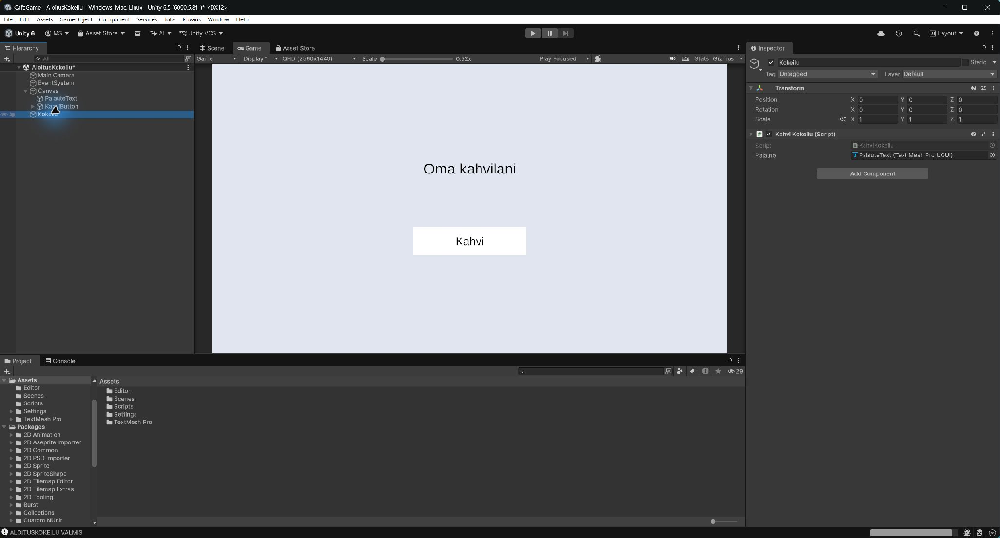
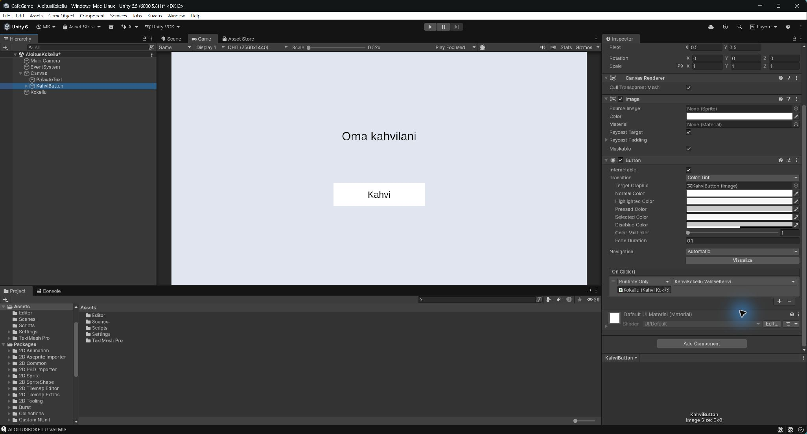
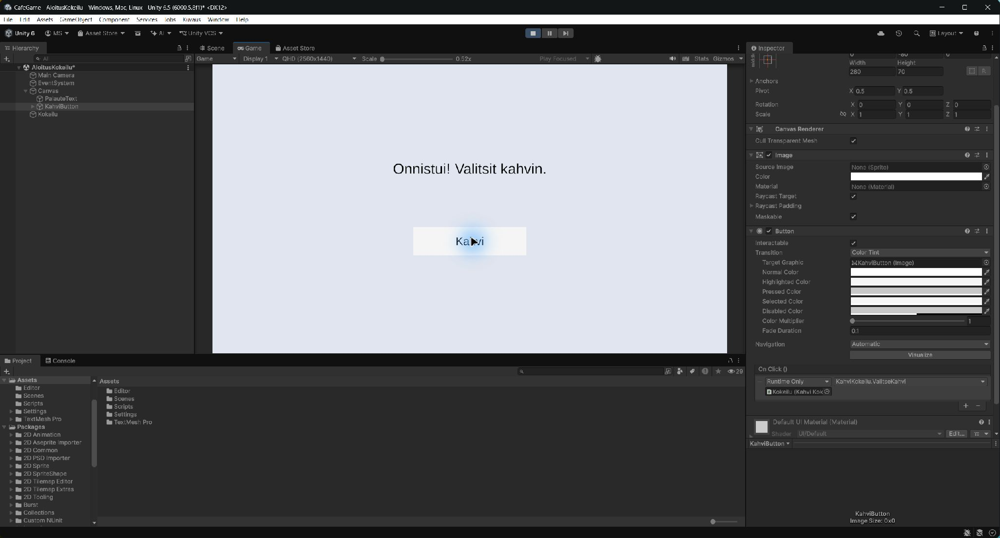

Ensimmäinen onnistuminen: oma nimi ja Kahvi-painike
Tee tämä ohjaajan kanssa ennen pitkää viikko-ohjetta. Ensimmäinen tavoite on oma nimi peliruudulla. Painikkeen toiminta on seuraava pieni askel.
Työvaihe avaus
1. Avaa Unity yhdessä ohjaajan kanssa

- Avaa Unity Hub. Jos projektia ei vielä ole, valitse Projects → New project → Universal 2D. Anna nimeksi CafeGame ja käytä ohjaajan sopimaa Unity 6 -versiota. Ohjaaja auttaa asennuksessa ja projektin sijainnissa.
- Odota editorin avautumista. Ohjaaja osoittaa kolme aluetta: Hierarchy, Inspector ja Game. Sinun ei tarvitse vielä opetella kaikkia ikkunoita.
- Luo Assets-kansioon Scenes-kansio tarvittaessa. File → Save As → Assets/Scenes/AloitusKokeilu.unity. Jos CafeGame-scene oli jo olemassa, Save As tekee erillisen kokeiluscenen ja säilyttää aiemman tiedoston.
Pysähdy ja tarkista: Unity on auki ja oma AloitusKokeilu-scene on tallennettu.
Jos ei onnistu: Jos asennus tai avaaminen estää työn, ohjaaja ratkaisee sen kanssasi ennen seuraavaa tehtävää.
Työvaihe nimi
2. Saat oman kahvilan nimen ruudulle

- Hierarchy → hiiren oikea → UI → Text - TextMeshPro (joissakin versioissa UI (Canvas)). Jos Unity kysyy TMP Essentials -pakettia, paina Import TMP Essentials. Unity luo myös Canvasin ja EventSystemin.
- Valitse juuri syntynyt teksti Hierarchystä. Nimeä se PalauteText. Kirjoita Inspectorin tekstialueeseen oma kahvilan työnimi.
- Aseta Font Size = 36 ja tekstiväri mustaksi. Valitse tekstin kohdistus keskelle.
- Rect Transform → Anchor Presets: ohjaaja näyttää keskipisteankkurin. Valitse se Alt ja Shift pohjassa. Aseta Pos X = 0, Pos Y = 100, Width = 600, Height = 100.

- Valitse Canvas: Render Mode = Screen Space - Overlay. Canvas Scaler → Scale With Screen Size, Reference Resolution 1280 × 720. Avaa Game-välilehti.

- Paina Play. Näet itse kirjoittamasi nimen peliruudulla. Näytä ruutu ohjaajalle. Poistu Play-tilasta ja tallenna scene.
- Muuta nimeä tai tekstin väriä itse. Käynnistä Play uudelleen ja osoita, että oma muutos näkyy.
Pysähdy ja tarkista: Oma nimi näkyy peliruudulla, ja olet saanut yhden oman muutoksen näkymään. Tämä riittää ensimmäiseksi onnistumiseksi.
Jos ei onnistu: Ohjaaja tarkistaa kanssasi tekstin sijainnin, värin ja Canvasin. Tavoite on saada tämä näkyviin ennen lisätehtäviä.
Pysähdy tähän hetkeksi
Olet aloittanut pelin tekemisen: loit ruudulle osan ja sait oman muutoksen näkymään. Ota kuvakaappaus Game-ikkunasta. Kerro ohjaajalle, mitä muutit ja missä.
Seuraava tehtävä tehdään, kun tämä onnistuminen on nähty yhdessä. Jos aikaa ei ole, tallenna työ ja aloita seuraava kerta painikkeesta.
Työvaihe painike
3. Lisää Kahvi-painike
- Poistu Play-tilasta. Valitse Hierarchyssä Canvas → hiiren oikea → UI → Button - TextMeshPro. Nimeä objekti KahviButton.
- Valitse KahviButtonin Rect Transform. Keskipisteankkuri, Pos X = 0, Pos Y = -80, Width = 280, Height = 70.
- Avaa KahviButtonin nuoli Hierarchyssä. Valitse Text (TMP) -lapsi ja kirjoita tekstiksi Kahvi. Font Size = 28.
- Paina Play ja kokeile painiketta. Se reagoi painallukseen värillään, mutta teksti ei vielä vaihdu. Poistu Play-tilasta ja tallenna.
Pysähdy ja tarkista: Kahvi-painike näkyy nimen alapuolella.
Jos ei onnistu: Jos painike puuttuu, varmista että se on Canvasin sisällä. Jos painallus ei reagoi, ohjaaja tarkistaa EventSystemin.
Työvaihe toiminto
4. Saat painikkeesta oman palautteen
- Luo Project → Assets-kansioon Scripts-kansio. Lataa pieni KahviKokeilu.cs-työpohja ja kopioi tiedosto Assets/Scripts-kansioon. Tämän kokeilun koodi on alla kokonaan. Ohjaaja näyttää, mitä yksi tekstin vaihtava rivi tekee.
- Odota Unityn käännöstä. Luo Hierarchy → Create Empty ja nimeä objekti Kokeilu. Raahaa Project-ikkunan KahviKokeilu.cs Kokeilu-objektin päälle.
- Valitse Kokeilu-objekti. Raahaa Hierarchyn PalauteText Inspectorin Palaute-kenttään. Kenttä ei saa jäädä None-tilaan.

- Valitse KahviButton → Inspector → Button → On Click () → +. Raahaa Hierarchyn Kokeilu-objekti tyhjään kenttään. Valitse No Function → KahviKokeilu → ValitseKahvi().

- Paina Play ja Kahvi. Ruudulla lukee ”Onnistui! Valitsit kahvin.” Näytä toimiva painallus ohjaajalle. Poistu Play-tilasta.

- Avaa KahviKokeilu.cs ja muuta lainausmerkkien sisällä oleva palauteteksti omaksi viestiksesi. Säilytä lainausmerkit ja puolipiste. Tallenna ja kokeile uudelleen. Kerro, mikä rivi teki muutoksen.
Pysähdy ja tarkista: Painike vaihtaa tekstin, ja oma palautetekstisi toimii.
Jos ei onnistu: Ohjaaja tarkistaa ensimmäisen Console-virheen, Palaute-kentän ja On Click -kytkennän. Tämä kytkentä tehdään tarvittaessa yhdessä; opiskelija tekee oman tekstimuutoksen itse.
Kokeilun pieni koodi
using TMPro;
using UnityEngine;
public class KahviKokeilu : MonoBehaviour
{
[SerializeField] private TMP_Text palaute;
public void ValitseKahvi()
{
palaute.text = "Onnistui! Valitsit kahvin.";
}
}
palaute.text = ... vaihtaa näkyvän tekstin. PalauteText raahataan kenttään, jotta skripti tietää, mitä tekstiä muutetaan. Painike kutsuu ValitseKahvi-toimintoa. Tämä valmis kokeilupohja on ohjausmateriaalia; opiskelijan osaamista havainnoidaan hänen omasta muutoksestaan ja selityksestään.
Tallenna onnistuminen ja sovi seuraava askel
- Tallenna scene. Ota kuva omasta nimestä tai painikkeen palautteesta.
- Ohjaaja auttaa liittämään Unity-projektin jo tehtyyn repositoryyn työvaiheen 34-4 mukaan. Tallenna kuva project-docs/evidence/week-34/aloitus.png ja tee commit sekä push.
- Kirjoita päiväkirjaan kaksi virkettä: ”Sain ruudulle …” ja ”Muutin itse …”. Kirjaa, missä ohjaaja auttoi. Viikon lopussa täydennä muut viikon 34 kirjaukset.
- Sovi seuraavan kerran ensimmäinen tehtävä: avaat itse AloitusKokeilu-scenen ja näytät oman muutoksesi. Sen jälkeen jatkat viikon 34 työympäristö- ja asiakastehtäviä.
Varsinaiseen peliin siirtyminen: säilytä AloitusKokeilu työnäytteenä. Luo File → New Scene -toiminnolla uusi 2D-scene ja tallenna Assets/Scenes/CafeGame.unity, jos CafeGamea ei vielä ole. Viikkojen 34 ja 36 selainjulkaisuissa Scene Listiin valitaan vain CafeGame. KahviKokeilu-skripti ja Kokeilu-objekti kuuluvat vain AloitusKokeilu-sceneen.